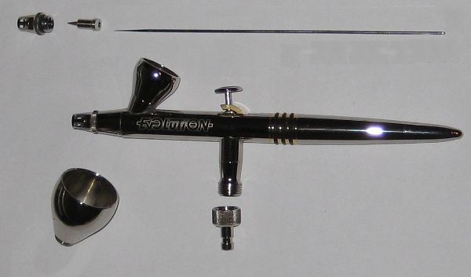

Review Harder Steenbeck Evolution
This is the second airbrush I own, and I bought it as successor of the BD-180 airbrush which I reviewed previously. I still use the compressor without issues, but the BD-180 was finally put aside as paint results were still disappointing, especially with getting the paint on "wet" enough. May still be my airbrush technique, but I had occasional good results, especially on large surfaces. The 0,2mm nozzle just seems too small for larger paint areas like a tank or aeroplane. So the result is spraying with too much distance, which causes the paint to dry while in mid-air before reaching the model.
Airbrush Review
Total airbrush kit costed less than 150 euro's, which includes:
- 0.2mm nozzle, needle, and cap
- 0.4mm nozzle, needla and cap
- 2 and 5 ml cup
On the positive side
- Two sets of needles/caps/nozzles
- Threatless nozzle
- Teflon parts
On the negative side
- A bit expensive
Using the airbrush
Compared to the "old" BD-180, I've not yet found issues with this airbush. No quality issues whatsoever like I experienced with the BD-180, it really prooves this is a German Quality product. By the way, I received a DVD with how the airbrush is made, and also, very important, how to use the airbrush. From design point of view, some things are really thought of well. Especially the threatless nozzle, meaning not fiddling around with tiny nozzles and wrenches. Also the markings on the cap, nozzle and needle are there do distinguish the 0.2mm with the 0.4mm size.
Most noticable when using the airbrush is the 0.4mm nozzle size, which I would definitely recommens when airbrushing 1:35 size tanks, in combination with Vallejo acrylics. I also started using Wicked retarder. Final spraying result is a very smooth paint job, compared to the mediocre results I could get with the BD-180. To be realistic though, the main contributor to this is mainly the bigger nozzle size.
Conclusion
Nice design, well made tool, but a bit pricey. From competition point of view, the Iwata's Eclipse (HP-CS) seems to be on the sweet spot regarding price and functionality.